process
The
user center design methodology was applied in this project so the design process can be divided into the four steps of this approach.
understanding of the context of use
In this first stage, we tried to understand how the users manage their time to accomplish their student-life tasks, such as project assignments, time to study, or even simple homework tasks, besides sports. We selected sports as a complementary activity because is a typical interest that we discovered that a lot of students have.
For this process, we differentiated two target groups, students that practice sports alone and students that practice sports in teams. We believed that this differentiation could be interesting because we could study how can vary the process of time management when the organization of an activity depends on more than one person.
Five people of each target group participated in the study. For each of them, an interview with open-ended questions was conducted. These interviews were semi-structured, and notes and no verbal information were captured by members of the project in each interview. After analyzing the results, the next insights were extracted.
1. The students need a flexible tool for time management that can combine academic responsibilities and free-time activities.
2. The students like to follow a healthy lifestyle and are open to invest time in activities that allow them to achieve it.
3. The students need to coordinate with other people for some group activities.
specification of user requirements
After defining the insights, a study over them was conducted. We applied different methods like
affinity diagrams to organize the ideas,
point of view to have a clear goal in our design process,
Personas to empathize with our users, or a definition of the different environments that these users could have.
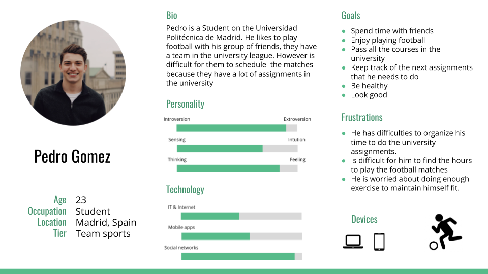
Example of one persona designed in the project
design of solution
Before starting with the creation of prototypes for the solution, different techniques were applied like navigation maps or scheme layouts.
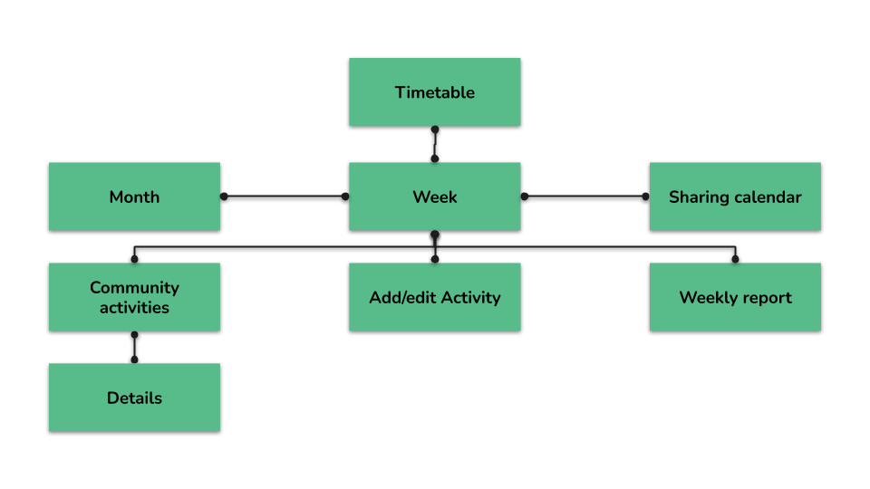
Navigation map
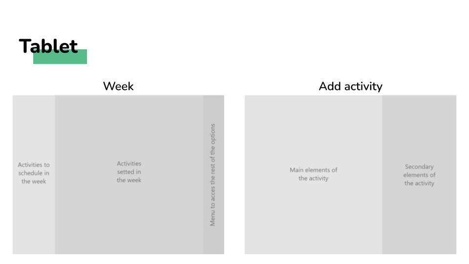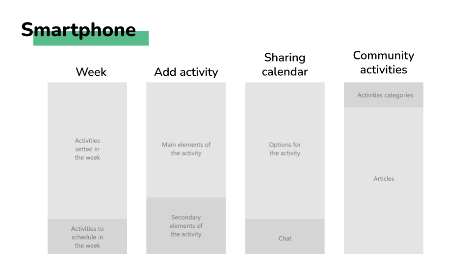
Scheme layouts
After it, in the prototype design, two phases were addressed, in the first one, we designed of low fidelity, and when this prototype was validated by a tutor expert in the field, a high fidelity version was created.
Two versions of the system were designed in each phase. One was a tablet application version. The reason to choose this device was that a tablet is the device that is more similar to a classic board that you can put on a wall and touch to move notes or post-its.
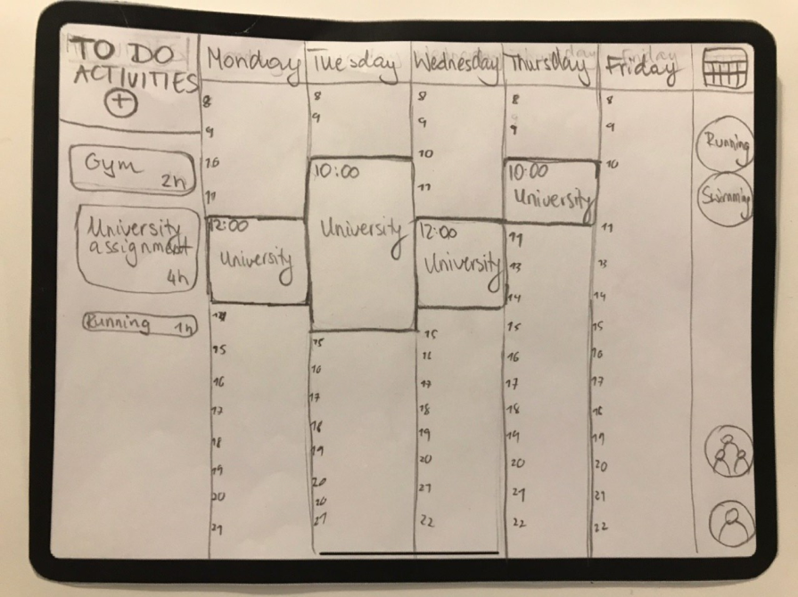
Low fidelity prototype of the tablet version
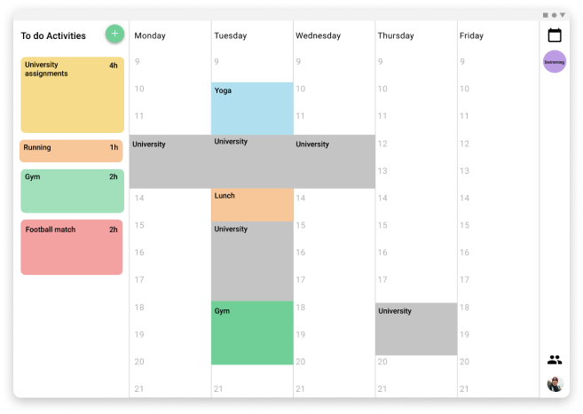
High fidelity prototype of the tablet version
And the other version was a multiplatform application for mobile and smartwatches. The reason for choosing these two devices is that they are usually being carried by the users everywhere they go and with that, we can try to bring that virtual board to everywhere the user goes.
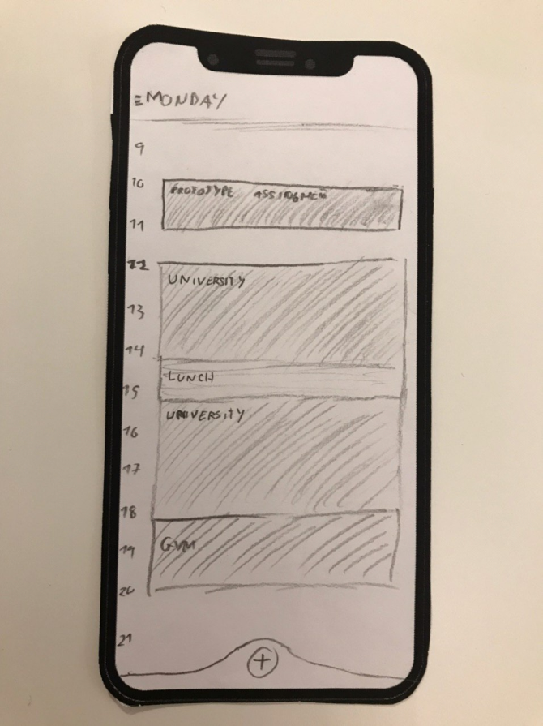
Low fidelity prototype of the mobile version
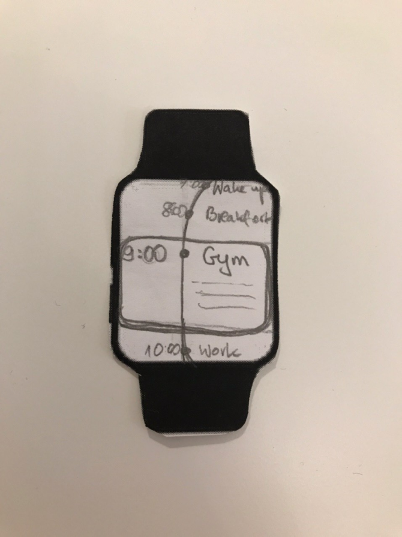
Low fidelity prototype of the smartwatch version
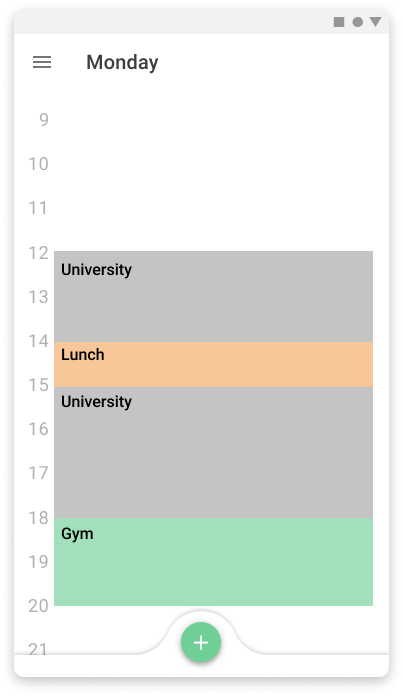
High fidelity prototype of the mobile version
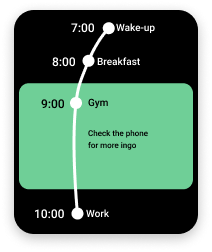
High fidelity prototype of the smartwatch version
For these prototypes, some design guidelines were defined. As a base for it, the
material design was used and the already patterns defined in the google guidelines were applied. In addition to these, other design decisions were taken.
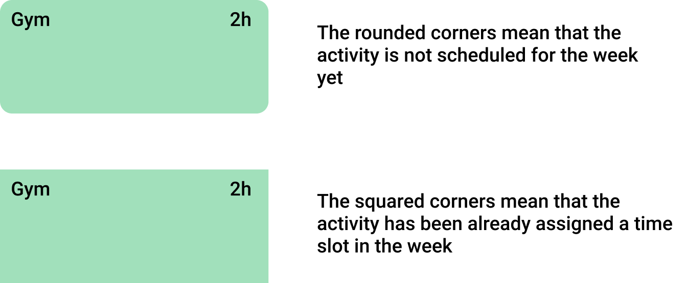
Explanation of the meaning of the corners in the activities
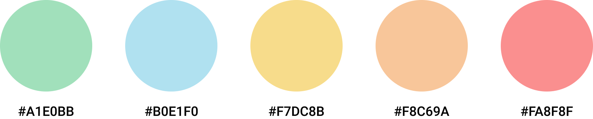
Color scheme
evaluation
The usability tests were not conducted but they were planned, an
scenario to set the users in the proper environment was written, after it, a set of tasks were defined to test the different functionalities of the system and ensure that the users understand them and the features have a high level of usability.
You want to organize a football match with your friends, and to schedule the best hour for it between your friends, you are going to create an event with the name “Football match”, you are also going to specify that the math is going to play with friends in the Retiro Park, it will take 2 hours and you will need to remind it just 10 min before the specified hour because you live close to the football field and with that margin is enough to arrive on time. Additionally you are going to invite John to this event. Although your week is very busy you are going to propose to meet on tuesday or thursday afternoon and see what the rest of your friends think about that two options.
(Some time has happened)
Once your friends have decided you will finally decide that the day for the football match is going to be on tuesday afternoon and you will cancel the gym sesion that you have programmed for that hour.
One task defined in the project
Both versions of the design had the same kind of features, but the approaches were different. In this evaluation, some metrics should be taken to consider which version was the most appropriate and satisfactory for the users.
final design
to-do panel
A panel that was displayed in two different places depending on the version has the list of pending activities that the user has, the activity size in the panel varies depending on the length of time needed to complete the activityWeekly view.
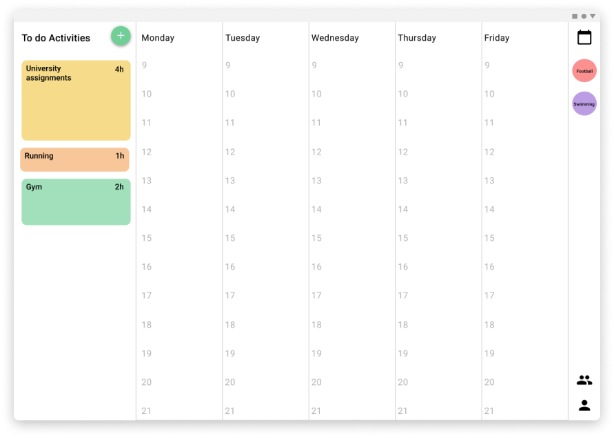
Tablet version
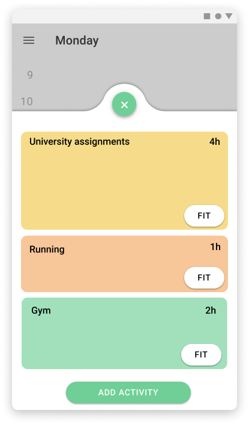
Mobile version
weekly view
The schedule for the activities is displayed in the week the same way that you can set notes on a board, so it is easy to visualize where are the time slots that the users can be free or the ones that they have to do things and how long they will take.
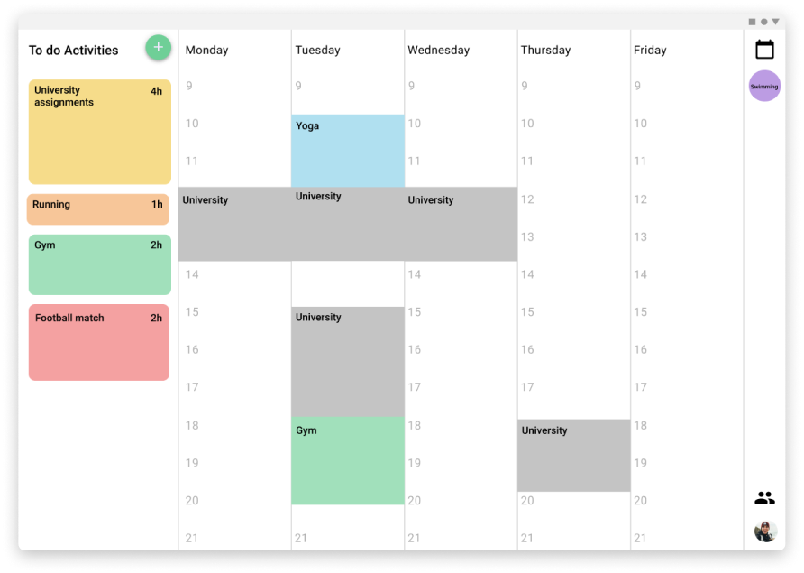
Tablet version

Mobile version
setting of activities
The different activities can be dragged and dropped from the panel of to-do activities to the weekly view, also from one position of the week to another. The users can even split the time that they want to assign for an activity in the week in multiple time slots, or even just schedule a part of the time and the rest reserve it in the to-do panel. This process tries to simulate the versatility and freedom of the pos-its in a board.
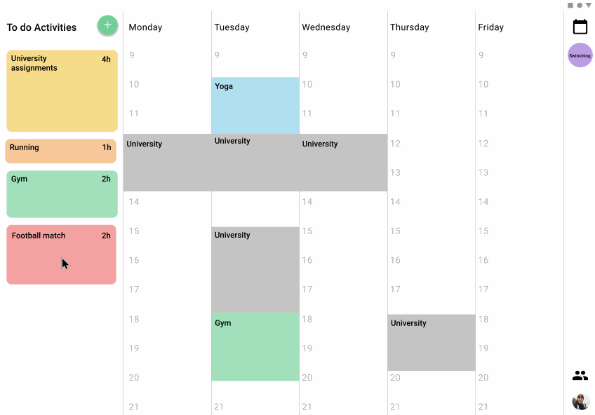
Tablet version
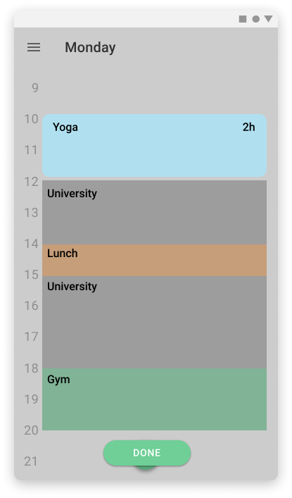
Mobile version
creation of activities and social coordination
When an activity is created it can be specified that is a group activity and the users can invite the people involved. After this, a new screen appears to schedule the time for the activity in common. For this process, different tools are provided like the possibility of proposing different options and vote for them or a chat to discuss with messages the options.
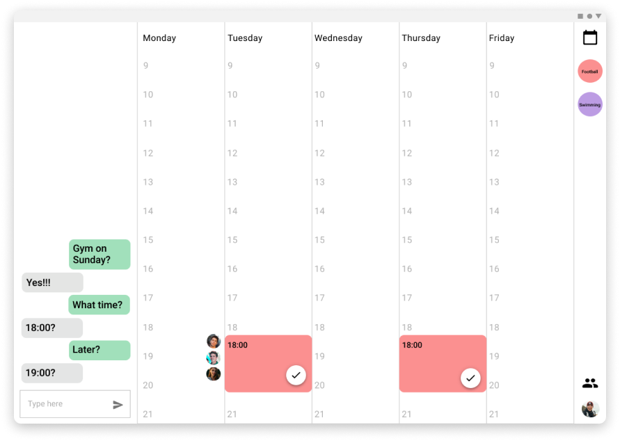
Tablet version
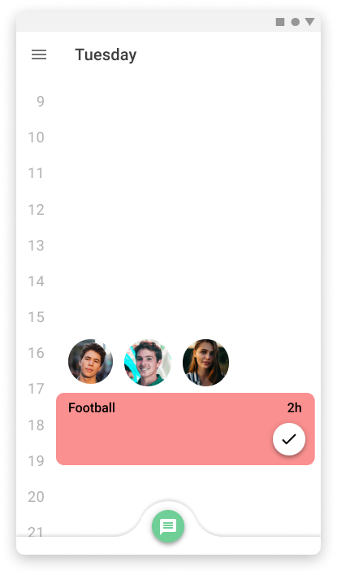
Mobile version
community activities
Instead of creating custom activities the users can choose from a set of predefined ones that other users have created, for example, they can be interested in research about healthy life, so they can read an article about yoga and then add a yoga activity to the to-do panel. Or as another option, the professors can set the assignments in the platform and the students can just read the description and add the activity with the estimated time in the to-do panel.
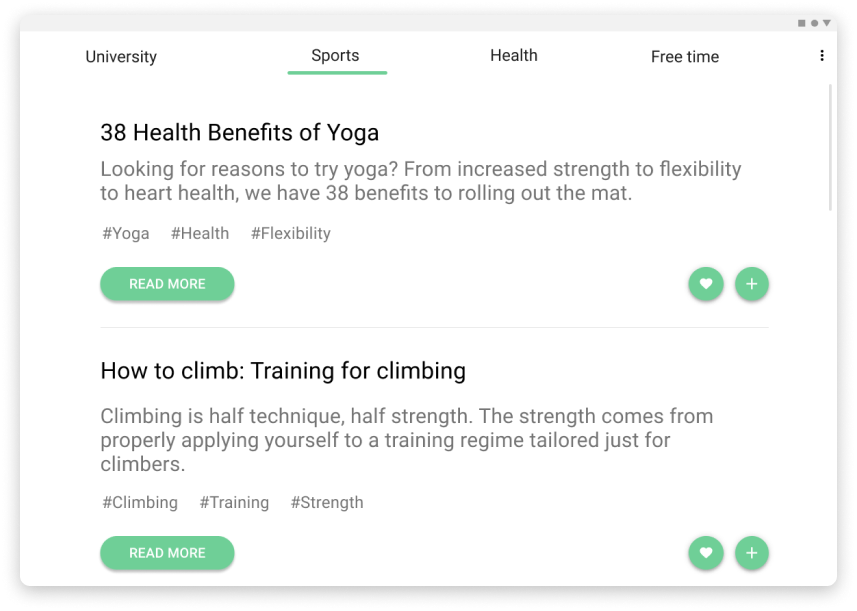
Tablet version
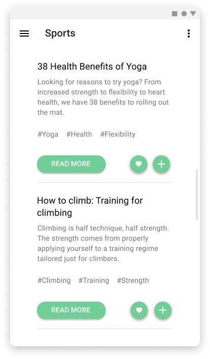
Mobile version